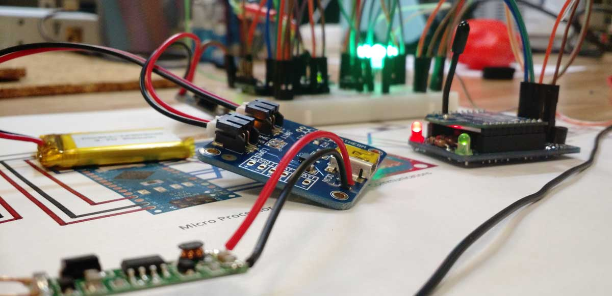

Last time you were in a coffee shop, were you staring into your phone or computer screen? Cast a Cup can help!
We tried to image coffee shops and bars as more openly social spaces. With Cast a Cup, you can configure your interests, passions, questions, or anything else and then see who around you shares some similarities, even if you don’t already know them. It’s a whole new kind of conversation starter.
Technology:
- Arduino/C
- Fritzing
- iOS (Cordova)
My roles:
- Developer/Technologist
- Hardware design
- Solderer
- Product tester
